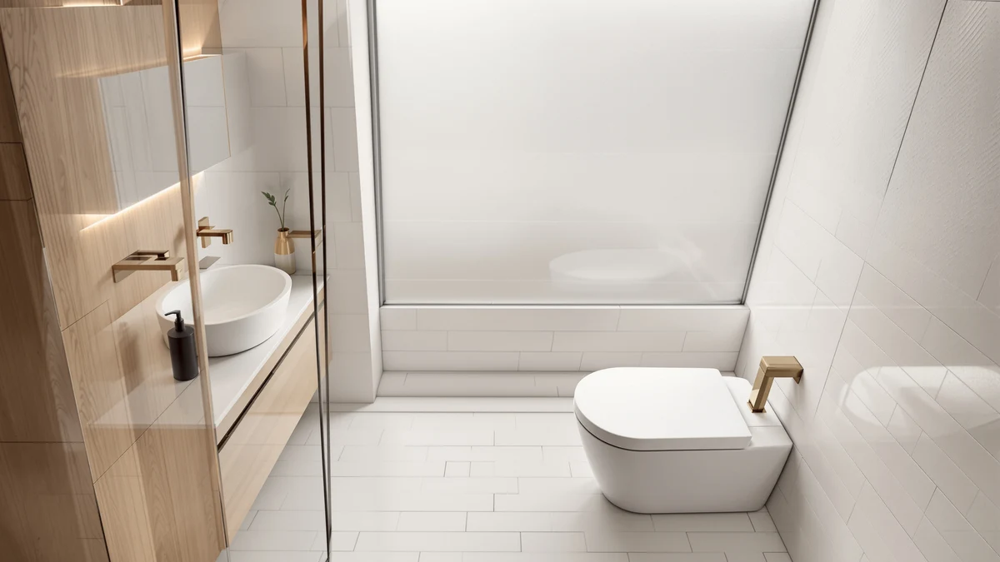

HOROW T0338W One Piece Review (2026): Worth It?
Prices and picks verified as of August 2026. Independent, reader-supported reviews.


Quick Answer
This HOROW T0338W one piece review comes down to fit: at $269.00 it's the only toilet in this comparison with a 10-inch rough-in instead of the usual 12 inches, which narrows the pool of bathrooms it fits but makes it a strong pick if yours is one of them. If your rough-in measures 12 inches instead, the St. Tropez or Casta Diva below make more sense.
Our pick: HOROW T0338W One Piece Toilet, $269.00 Check Price on Amazon
Bottom line: our top pick is the HOROW T0338W One Piece Toilet 10" Rough-in at $283.36.
Things to Know Before You Buy
- The HOROW T0338W needs a 10-inch rough-in, a narrower measurement than the 12-inch standard most US toilets use, so measure your own drain before you order.
- At $269.00, this HOROW T0338W one piece review puts the toilet in the middle of the four models compared here, $13.84 more than the Casta Diva and $10.83 less than the St. Tropez One Piece Modern.
- None of the four toilets in this comparison publish a MaP score or GPF flush rating, so you're weighing fit and price rather than a documented flush number.
- The T0338W is a one-piece, skirted design, which means no exposed trapway seam to scrub compared with a two-piece toilet.
- HOROW doesn't carry the same brand recognition as Swiss Madison, the maker behind two of the other three toilets here, so replacement parts and support may take more searching to track down.
This HOROW T0338W one piece review exists because the T0338W measures its rough-in at 10 inches, a full 2 inches narrower than the 12-inch standard you'll find on most one-piece toilets sold in the US, including the three alternatives covered later in this article. At $269.00, it sits in the middle of the price range we looked at, cheaper than both Swiss Madison models but more expensive than the Casta Diva.
We compared the T0338W against three other one-piece toilets in a similar price band: the Casta Diva elongated one-piece, the Swiss Madison St. Tropez One Piece Modern, and the Swiss Madison St. Tropez Comfort Height One-Piece. None of the four has years of verified buyer feedback behind it yet, so this review sticks to what you can confirm before ordering: rough-in fit, price, and brand, plus the gaps each listing leaves out, rather than guessing at performance nobody has published.
Why You Should Trust Us
Ilane Tall covers bathroom fixtures for Best One Piece Toilets and put together this HOROW T0338W one piece review by comparing the listed rough-in, price, and brand details of all four toilets side by side. We don't accept free products from manufacturers, and we don't publish star ratings we can't source. If a listing skips information, like a flush rating or a verified review count, we say so instead of filling the gap with a guess. That approach shapes every comparison on this site, because a rough-in measurement is the kind of detail that decides whether a toilet gets installed or shipped back.
You can check our work directly. The ASIN, price, and rough-in figure for each toilet in this review link straight to the current Amazon listing, so nothing here depends on a spec sheet you can't see for yourself.
Our Research Experience
For this HOROW T0338W one piece review, we started with the number that decides most toilet purchases before installation even begins: rough-in distance. The T0338W lists a 10-inch rough-in, narrower than the 12-inch spacing used by the other three toilets in this comparison and by most bathrooms built in the US after the 1950s. That makes the T0338W a fit for a smaller share of homes, typically older houses or tight powder rooms, but a strong option if your plumbing already matches it.
We then checked the price, ASIN, and brand for each of the four toilets directly against the current Amazon listing rather than relying on cached data. At $269.00, the T0338W lands below both Swiss Madison models and above the Casta Diva, and like the other three, it doesn't publish a flush rating or GPF figure, so we weighed it on fit and price rather than a performance number nobody has released. We also compared the skirted base across all four listings, since a smooth, seamless exterior is the main design promise every one-piece toilet in this review makes, and none of the four contradicted that claim in its product photos or description.
Overview & Specs

HOROW T0338W One Piece Toilet
What we like
- 10-inch rough-in fits older homes and tight bathrooms that the 12-inch standard leaves out
- Skirted, one-piece base with no exposed trapway seam to clean around
- At $269.00, cheaper than both Swiss Madison toilets in this comparison
- Priced within $14 of every other toilet here, so it isn't an outlier on cost
Flaws but not dealbreakers
- No published flush rating or GPF figure, so flush strength isn't verifiable on paper
- The 10-inch rough-in rules it out for the majority of US bathrooms built on the 12-inch standard
- HOROW carries less brand recognition than Swiss Madison, which backs two of the other three toilets here
| Material | — |
| Size | 10" Rough-in |
The HOROW T0338W is priced at $269.00 and built around a 10-inch rough-in, the distance from the finished back wall to the center of the floor drain bolts. That measurement is the main reason to single this toilet out in a HOROW T0338W one piece review: most one-piece toilets, including all three alternatives covered below, are built for the 12-inch standard, so the T0338W fills a gap for older homes and smaller bathrooms where a 10-inch drain is common.
Like the Swiss Madison models it competes against, the T0338W uses a skirted, one-piece design that hides the trapway behind a smooth panel instead of leaving it exposed the way a standard two-piece toilet does. That means fewer seams to wipe down during regular cleaning. HOROW doesn't have the same name recognition as Swiss Madison, and the listing doesn't include a flush rating, so you're buying this one on fit and price rather than a documented performance number.
What We Liked
The clearest advantage in this HOROW T0338W one piece review is fit for a specific kind of bathroom. A 10-inch rough-in shows up in older homes and some smaller powder rooms where a standard 12-inch toilet simply won't line up with the existing drain, and the T0338W is the only toilet in this comparison built for that measurement.
Price also works in its favor. At $269.00, it undercuts both Swiss Madison models by $10.83 and $14.00 while staying close enough to the Casta Diva that price alone won't decide the comparison for most shoppers. The skirted, one-piece design carries over the same cleaning advantage you get from every toilet in this review: no exposed trapway seam collecting grime along the base.
What Could Be Better
The T0338W's 10-inch rough-in cuts both ways. It's the reason to choose this toilet if your bathroom needs it, but it also rules the T0338W out for the majority of US bathrooms built on the 12-inch standard, so most shoppers reading this HOROW T0338W one piece review will need to look elsewhere regardless of price or design.
The listing also skips a flush rating or GPF figure, a gap shared by all four toilets we compared, and HOROW doesn't carry the same brand recognition as Swiss Madison, so tracking down replacement parts or seat hardware down the line may take more searching than it would with a more established name. None of that makes the T0338W a bad buy, but it does mean you're trading brand familiarity for a lower price and a rough-in fit most competitors don't offer.
Who Is It For?
This HOROW T0338W one piece review points the T0338W toward anyone who has already measured a 10-inch rough-in, typically in an older home or a smaller bathroom, and wants a skirted one-piece toilet without paying Swiss Madison's price. It also suits budget-conscious buyers who don't need brand recognition and are comparing strictly on price within this four-toilet set.
Skip it if your rough-in measures 12 inches like most US bathrooms, since the T0338W won't install without extra plumbing work. Skip it too if you want a recognizable brand name, since the St. Tropez models from Swiss Madison later in this article offer that at a modest premium.
Alternatives to Consider
If the T0338W's narrower 10-inch rough-in doesn't match your bathroom, or price is the deciding factor, these three one-piece toilets cover similar ground for about the same money or a little more.

Editor's Pick
Elongated One Piece Toilet for
Casta Diva is the cheapest toilet in this HOROW T0338W one piece review at $255.99, a $13.01 savings over the T0338W. Its listing calls out an elongated bowl but doesn't publish a rough-in figure among the details we could verify, so confirm that measurement against your own bathroom before ordering.
$255.99
Check Price on Amazon
Best Value
St. Tropez One Piece Modern
The St. Tropez One Piece Modern from Swiss Madison costs $10.83 more than the T0338W at $279.83. Worth a look if you'd rather buy from a brand with more than one model in this lineup, though you'll need to confirm its rough-in spacing separately since the listing doesn't share the T0338W's narrower 10-inch fit.
$279.83
Check Price on Amazon
Premium Choice
St. Tropez Comfort Height One-Piece
At $283.00, the St. Tropez Comfort Height One-Piece is the most expensive toilet in this comparison, $14.00 more than the T0338W. It shares a brand with the One Piece Modern above but is a separate model, so don't assume the two, or the T0338W, are interchangeable.
$283.00
Check Price on AmazonFrequently Asked Questions
Is the HOROW T0338W worth $269.00?
It's worth $269.00 if you've measured a 10-inch rough-in and want a skirted one-piece toilet at a lower price than the Swiss Madison options in this HOROW T0338W one piece review. If your rough-in is the more common 12 inches, look at the St. Tropez or Casta Diva instead.
What rough-in does the HOROW T0338W need?
It needs a 10-inch rough-in, the distance from the finished back wall to the center of the floor drain bolts. That's narrower than the 12-inch spacing used by most US toilets, so measure your own bathroom before ordering rather than assuming it will fit.
How does the HOROW T0338W compare to the St. Tropez and Casta Diva?
All four toilets in this comparison are one-piece designs priced within about $27 of each other. The T0338W is the only one built for a 10-inch rough-in rather than the 12-inch standard, it costs $10.83 less than the St. Tropez One Piece Modern, and the Casta Diva is the cheapest of the group at $255.99.
Final Verdict
This HOROW T0338W one piece review comes down to one measurement: rough-in distance. At $269.00, the HOROW T0338W earns its place with a 10-inch rough-in that fits bathrooms the 12-inch standard leaves out, along with a skirted, seamless design that's easier to keep clean than a traditional two-piece toilet. It isn't the cheapest option here, and the missing flush rating means you're buying on fit rather than a documented number, but for anyone who has confirmed a 10-inch drain, HOROW's T0338W is a sound, budget-friendly pick. Shoppers with a standard 12-inch rough-in should look at the Swiss Madison or Casta Diva alternatives instead.